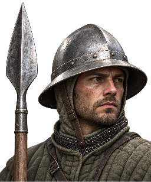
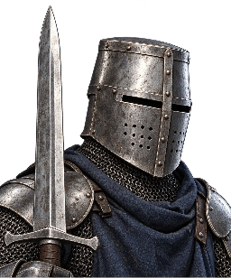
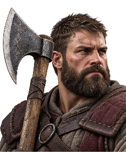
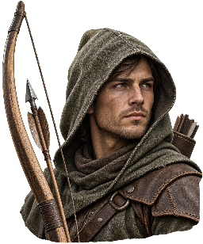
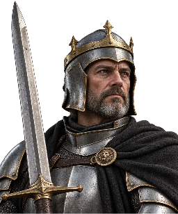

Cinematic · Einheitenbilder
Kopf und Waffe im engen Ausschnitt. Einheitliche Blickrichtung und gedeckte Materialien, mit unterschiedlichen Helmen, Kleidung und Waffensilhouetten.
Ausbildung · 48 × 58 px

SpeerträgerOffener Helm · Speer

SchwertkämpferGeschlossener Helm · Schwert

AxtkämpferUnbedeckter Kopf · Axt

BogenschützeKapuze · Bogen und Pfeil

HeldStirnreif · Plattenrüstung und Schwert
Garnison / Ausbildung / Details
SpeerträgerSchwertkämpferAxtkämpferBogenschützeHeld
Im Cinematic-Modus in Ausbildung, Versand, Garnison und Kampfberichten eingebunden.
Zum Spiel · Assets und imagegen-Prompts